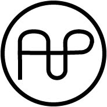
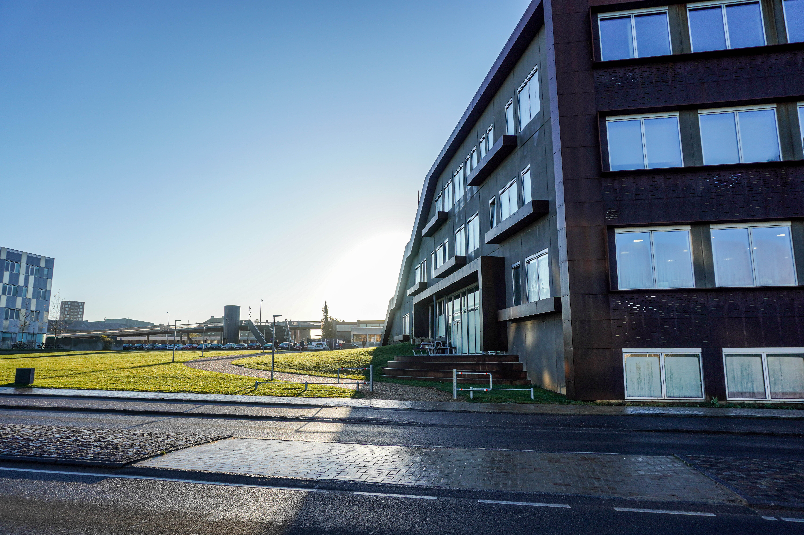

I dette projekt er der produceret produktbilleder, landskabsbilleder og portrætter med et udlånt kamera fra UCL. Herefter er billederne redigeret i Adobe programmet Lightroom Classic. Produktbilledet er produceret i et fotostudie på UCL. De resterende billeder er taget udendørs omkring skolens matrikel i Odense.

